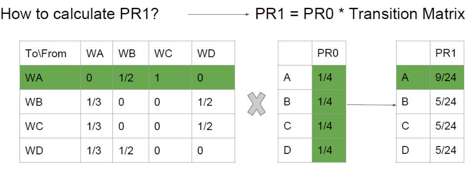
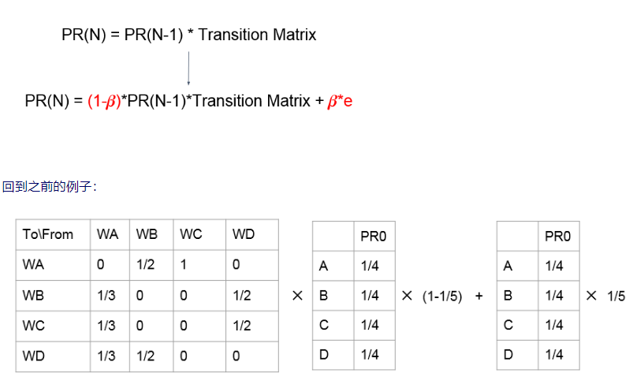
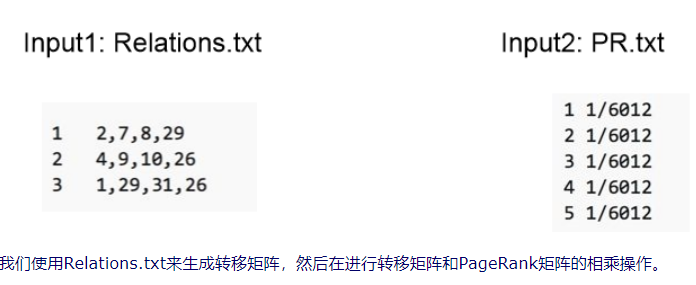
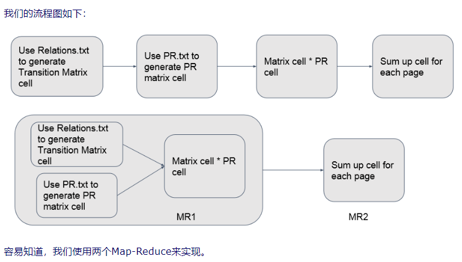
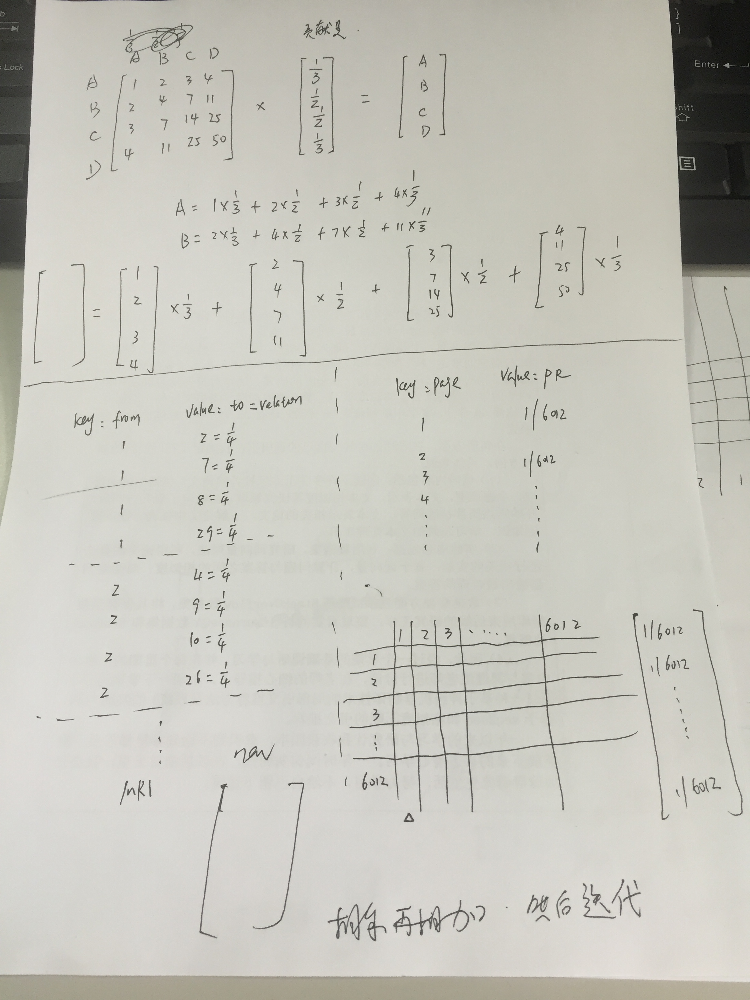

pageRank学习
撰写于 2018-10-19 修改于 2018-10-19 分类 算法
总结于这篇博客: https://www.cnblogs.com/futurehau/p/6062769.html
PageRank:
- 是对搜索引擎的搜索网页进行排序的算法
- 它的思想是模拟一个悠闲的上网者，上网者首先随机选择一个网页打开，然后在这个网页上呆了几分钟后，跳转到该网页所指向的链接，这样无所事事、漫无目的地在网页上跳来跳去，PageRank就是估计这个悠闲的上网者分布在各个网页上的概率。
PageRank背后的两个基本假设：
- 数量假设：更重要的网页更可能被更多的网页链接到。
- 质量假设：有更高的PageRank的网页将会传递更高的权重。
主要结构
- 转移矩阵
- PageRank Matrix PR0
图解

Figure 1
两个基本问题
- Dead Ends 终止点问题(有些网页不存在指向其他网页的链接，那么多次迭代之后导致所有网页的PageRank都变为0)
- Spider traps 陷阱问题(有些网页只存在指向自己的链接,那么多次迭代之后，这将导致这个网页的PageRank为1，而其他网页的PageRank为0)
解决终止点问题和陷阱问题
- 我们现在回到开始是所说的那个无聊的上网者，假如人类遇到这个问题的话，采取的解决办法就是关闭当前网页，重新打开一个网页。所以为了避免上述两个问题，我们呢对上边的转移公式做一个小小的修正。（有概率随机打开一个网页，这时候打开所有网页的概率均等）

Figure 2
Map-Reduce计算PageRank
- 输入数据

Figure 3- 矩阵相乘
- 接下来就设计到Map-Reduce处理矩阵的乘法操作，我们不能直接来进行两个矩阵的乘法操作。因为如果这样做的话，我们需要转移矩阵的一行数据都来齐之后才可进行，这就需要我们 in-memory 存储整个矩阵，很容易造成out of mempry 而且速度还慢。所以我们的处理方法是用Traverse MAtrix的每一列和PR相成，最后把所有元素相加即可。这样我们就不需要in-memery那么多东西。其实对于一个网页A，可以思考为，你A B C D分别可以为我贡献多少，然后把ABCD的贡献全都加起来，就是A的PageRank。矩阵直接相乘和我们的相乘相加的方法的其别就是，直接相乘是计算A的PageRank 的时候，把所以对A有贡献的网页都拿来，计算出贡献加起来作为A的PageRank;相乘相加是首先计算出A可以为ABCD贡献多少，然后B可以为ABCD贡献多少，然后C..D..。最后再把这些值加起来，分别作为ABCD的PageRank。
- 图解

Figure 4
- 手画图

Figure 5